에너지관리기사 (2004-05-23 기출문제)
1과목: 연소공학
1. 석탄에 함유되어 있는 성분중 ①수분, ②휘발분, ③황분이 연소에 미치는 영향을 위 번호에 맞게 나열한 것은?
- ①매연발생 ②대기오염 ③착화 및 연소방해
- ①발열량 감소 ②매연발생 ③연소기관의 부식
- ①연소방해 ②발열량 감소 ③매연발생
- ①매연발생 ②발열량 감소 ③점화방해
(정답률: 85%)

2. 연소진행에 따라 생기는 다음 반응중 흡열반응은 어느 것인가?
- C + 1/2O2 = CO
- C + 1/2O2 = CO2
- C + CO2 = 2CO
- H2 + 1/2O2 = H2O
(정답률: 42%)
3. 고체연료의 전황분 측정방법에 해당되는 것은?
- 에슈카법
- 쉐필드 고온법
- 중량법
- 리비히법
(정답률: 79%)
4. CH4 1Nm3가 완전연소할 때 생기는 H2O의 양은?
- 0.8㎏
- 0.9㎏
- 1.6㎏
- 1.8㎏
(정답률: 알수없음)
5. C(84%), H(12%) 및 S(4%)의 조성으로 되어있는 중유를 공기비 1.1로 연소할 때 건(乾)연소가스량(Nm3/㎏)은?
- 6.1
- 7.5
- 9.3
- 10.9
(정답률: 36%)
6. 연도가스 분석결과가 CO2 13%, O2 8%, CO 0% 일 때 공기과 잉계수 m은 얼마인가? (단, CO2max 는 21%)
- 1.22
- 1.42
- 1.62
- 1.82
(정답률: 70%)
7. 다음 조성의 수성가스를 건조공기를 써서 연소시킬 때의 공기량(Nm3/Nm3은? (단, 여기서 공기과잉율은 1.30, 조성은 CO2(4.5%), O2(0.2%), CO(38.0%), H2(52.0%), N2(5.3%))
- 1.95
- 2.77
- 3.67
- 4.09
(정답률: 82%)
8. 연소에서 1 mol의 물이 생성될 때 고발열량과 저발열량의 차이는 얼마인가?
- 80cal/g
- 539cal/g.mol
- 92⑤cal/g
- 9702cal/g.mol
(정답률: 72%)
9. 압력(유압) 분무식 버너의 장점에 대한 기술중 잘못된 것은?
- 기름의 정도가 높으면 무화가 나빠진다.
- 운전에 필요한 경비가 비교적 적게 든다.
- 대용량의 버너제작이 용이하다.
- 분무 유량조절의 범위가 넓다.
(정답률: 77%)
10. 열관리의 의의를 가장 잘 설명한 것은?
- 연료의 완전연소를 목적으로 관리방법 및 기술의 양면을 다룬다.
- 열을 유효하게 사용할 목적으로 관리 방법을 다룬다.
- 연료 및 열의 효율적인 사용을 목적으로 관리방법 및 기술의 양면을 다룬다.
- 열 사용장치의 효율 향상을 목적으로 관리 기술을 다룬다.
(정답률: 80%)
11. 집진장치는 일반적으로 압력손실을 초래하는데 비해 승압효과를 나타내는 것은?
- 제트 스크러버(Jet Scrubber)
- 사이클론 스크러버(Cyclone Scrubber)
- 분무탑(Spray tower)
- 멀티 사이클론(Multi cyclone)
(정답률: 18%)
12. 보일러 송풍기입구 공기가 15℃, 1기압으로 매분 1000m3가 공기예열로 들어가면, 같은 압력으로 200℃로 예열된 공기는 매분 얼마만한 양(m3)으로 나오는가?
- 1153
- 1399
- 1642
- 1912
(정답률: 55%)
13. 굴뚝의 이론통풍력은
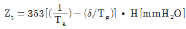
로 표시될 수 있는데 여기서 δ는 어떤 값인가? (단, 식에서 T는 절대온도(K), H는 굴뚝높이(m), γ는 비중량(㎏/m3)을 나타내며 첨자 a, g는 공기, 가스를 의미한다.)- 표준상태하의 γa/γg
- 표준상태하의 γg/γa
- 배기상태하의 γg/γa
- 배기상태하의 γa/γg
(정답률: 50%)
14. 다음 연료중 단위 중량당 발열량이 가장 높은 것은?
- LPG
- 무연탄
- LNG
- 중유
(정답률: 17%)
15. 고체연료의 연소가스 관계식으로 맞는 것은? (단, G 연소가스량, Go 이론연소가스량, m 공기비, L 실제공기량, Lo 이론공기량, a 연소생성수증기량)
- Go = Lo + 1 - a
- G = Go - L + Lo
- G = Go + L - Lo
- Go = Lo - 1 + a
(정답률: 100%)
16. 프로판 1Nm3를 공기비 1.1로서 완전연소시킬 경우 건연소 가스량은 몇 Nm3인가?
- 24.2
- 26.2
- 20.2
- 33.2
(정답률: 47%)
17. 연소실의 화염온도를 높게 유지하기 위한 방법으로 잘못 설명된 것은?
- 연소를 완전히 행한다.
- 공기비를 가능한한 크게 한다.
- 연료나 공기의 예열온도를 높인다.
- 연소실 벽의 구조를 완벽하게 한다.
(정답률: 87%)
18. 중유연료의 연소시 무화에 수증기를 사용하는 경우 틀린 설명은?
- 고압무화가 가능하므로 무화의 효율이 좋다.
- 고압무화를 할수록 무화 매체량이 적어도 되므로 큰 용량 보일러에 사용된다.
- 높은 점도의 기름에 유리하다.
- 소형보일러 및 중소 요로(窯爐)용에는 공기무화보다 유리하다.
(정답률: 54%)
19. 연소가스중의 질소산화물 생성을 억제하기 위한 방법으로 틀린 것은?
- 2단 연소
- 고온 연소
- 수증기 분사연소
- 배가스 재순환연소
(정답률: 91%)
20. 로타리 버너를 쓰는데 로벽에 카본이 많이 붙었다. 그 주원인은?
- 연소실 온도가 너무 높다.
- 공기비가 너무 크다.
- 화염이 닿는 곳이 있다.
- 중유의 예열온도가 너무 높다.
(정답률: 94%)
2과목: 열역학
21. 단열변화에서 엔트로피의 변화량은 어떻게 되는가?
- 감소
- 증가
- 불변
- 일정치 않음
(정답률: 50%)
22. 다음 중 브레이턴 사이클과 관계되는 것은?
- 가스터빈의 이상사이클
- 증기원동소의 이상사이클
- 가솔린기관의 이상사이클
- 압축점화기관의 이상사이클
(정답률: 82%)
23. 도면은 한 랭킨사이클(Rankine cycle)의 T - S도면이다. 여기서 사선부분 4.5.6.7.4는 무엇을 나타내는가?
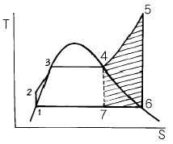
- 수증기의 과열에 의한 추가적 일(work)
- 수증기 과열을 위한 추가적 열량
- 응축기에서 제거 되어야 할 열량
- 보일러(boiler)의 열부하
(정답률: 100%)
24. 등엔트로피 과정은 다음 중 어느 것인가?
- 단열과정
- 단열가역과정
- Polytrope과정
- Joule-Thomson과정
(정답률: 71%)
25. 랭킨사이클에서 재열을 사용하는 주목적은?
- 연료를 절약하기 위해서
- 터빈 압력을 높이기 위해서
- 보일러 압력을 낮추기 위해서
- 터빈 출구의 건도를 조절하기 위해서
(정답률: 64%)
26. 다음 중 일반적으로 팽창밸브(expansion valve)과정은 어디에 속하는가?
- 등온팽창과정
- 정압팽창과정
- 등엔트로피과정
- 등엔탈피과정
(정답률: 22%)
27. 다음 중 완전 기체(Perfect Gas)법칙에 해당되지 않는 것은?
- PV = const(등온상태)
- 보일(Boyle)의 법칙
- 보일-샬(Boyle-charle)의 법칙
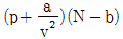
(정답률: 77%)
28. 열역학 제2법칙의 내용과 직접적인 관련이 없는 것은?
- 엔트로피(entropy)의 정의
- 가역열기관의 효율
- 자연 발생적인 열의 흐름 방향
- 내부 에너지의 정의
(정답률: 82%)
29. 1kg/cm2, 60℃에서 질소 2.3kg, 산소 1.8kg으로 된 기체 혼합물이 등엔트로피 상태로 압축되어 3.5kg/cm2로 되었다. 이 때 내부에너지 변화는 얼마인가? (단, Cv = 0.17kg/kg.℃, Cp = 0.24kg/kg.℃이고, 이 때 비열비(k)는 1.4이다.)
- 80.3kcal
- 99.7kcal
- 103.7kcal
- 107.3kcal
(정답률: 54%)
30. 랭킨사이클에서 터빈복수기의 진공도를 높일 때 나타나는 현상으로 올바른 것은?
- 이론 열효율이 낮아진다.
- 복수기의 포화온도가 높아진다.
- 터빈 출구의 증기건도가 낮아진다.
- 터빈 출구의 증기건도가 높아진다.
(정답률: 30%)
31. 그림은 Otto cycle의 p - v도표를 나타낸 것이다. 이 중 일생산 과정은?
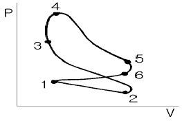
- 1 → 2
- 3 → 4
- 4 → 5
- 5 → 6
(정답률: 75%)
32. 냉동(refrigeration)사이클에 대한 성능계수(COP)는 다음 중 어느 것을 해준 일(work input)로 나누어 준 것인가?
- 저온측에서 방출된 열량
- 저온측에서 흡수한 열량
- 고온측에서 방출된 열량
- 고온측에서 흡수한 열량
(정답률: 50%)
33. 완전가스의 내부 에너지변화 dU는 정압비열(Cp), 정적비열(Cv) 및 온도(T)로 나타낼 때 어떻게 표시되는가?
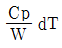
- Cv dT
- Cp dT
- CvCp dT
(정답률: 70%)
34. 단열 비가역 변화를 할때 전엔트로피는 어떻게 변하는가?
- 감소한다.
- 반드시 증가한다.
- 변화가 없다.
- 상관관계가 없다.
(정답률: 50%)
35. 일정한 압력 3㎏/cm2로 체적 0.5m3의 공기가 외부로 부터 40㎉의 열을 받아 그 체적이 0.8m3로 팽창하였다. 내부에 너지의 증가는 얼마인가?
- 9㎉
- 19㎉
- 29㎉
- 39㎉
(정답률: 60%)
36. 평균 유효 압력이 5㎏fcm2이고 행정체적이 2000㏄인 가솔린 엔진에서 사이클당 이 엔진이 하는 일을 ㎉로 환산했을 때의 근사값으로 맞는 것은?
- 1.0
- 0.75
- 0.50
- 0.25
(정답률: 40%)
37. 아음속(亞音速) 유동에서 유체가 팽창하여 가속되려면 노즐 단면적은 유동방향에 따라 어떻게 되어야 하는가?
- 감소되어야 한다.
- 증대되어야 한다.
- 최소 단면이 되어야 한다.
- 최대 단면이 되어야 한다.
(정답률: 65%)
38. 노즐을 통해 증기를 단열 팽창시켜 300[m/sec]의 속력을 얻으려면 최소 열낙차를 몇 [kcal/kg]으로 해야 하는가?
- 2.59
- 15.4
- 21.5
- 10.8
(정답률: 59%)
39. 중간 냉각기를 사용하여 다단 압축을 하는 이유로서 다음 중 가장 적합한 것은?
- 공기가 너무 뜨거워지면 위험하기 때문이다.
- 압축기의 일을 적게 할 수 있기 때문이다.
- 압축기의 크기가 제한되어 있기 때문이다.
- 압축기의 일을 크게 할 수 있기 때문이다.
(정답률: 91%)
40. 물 10kg을 0℃에서 100℃까지 가열할 때 물의 엔트로피 상승은 약 몇 kcal/℃인가?
- 3.12
- 3.32
- 3.52
- 3.72
(정답률: 42%)
3과목: 계측방법
41. 다음 중 적분동작(I동작)에 가장 많이 쓰이는 제어는?
- 증기압력제어
- 유량압력제어
- 증기속도제어
- 유량속도제어
(정답률: 82%)
42. 열전대 온도계를 설명한 것으로 맞는 것은?
- 온도에 대한 열기전력이 크며 내구성 재현성이 좋다.
- 흡습 등으로 열화(劣化)된다.
- 자기가열에 주의해야 한다.
- 밀도차를 이용한 것이다.
(정답률: 77%)
43. 보일러 수위를 육안으로 직접 확인할 수 있는 계측기는?
- 평형 반사식
- 부자식
- 다이아프램식
- 차압식
(정답률: 65%)
44. 다음 압력 중에서 값이 다른 것은?
- 101300pa
- 1atm
- 29.92inHg
- 760㎝Hg
(정답률: 58%)
45. 다음 온도계 중에서 가장 낮은 온도를 측정할 수 있는 것은?
- 바이메탈식 온도계
- 수은 봉입식 유리 온도계
- 색온도계
- 기체팽창식 압력 온도계
(정답률: 28%)
46. 다음 중 유체의 와류에 의해 측정하는 유량계는?
- 오발(Oval) 유량계
- 델타(Delta) 유량계
- 로타리 피스톤(Rotary piston) 유량계
- 로터미터(Rotameter)
(정답률: 80%)
47. 다음 중 미세한 압력차를 측정하기에 적합한 압력계는?
- 경사 마노미터
- 브르돈 게이지
- 수직 마노미터
- 파리오 미터(pyrometer)
(정답률: 89%)
48. 기전력(magenetic distortion) 효과를 이용한 압력계는?
- 액주형 압력계
- 아네로이드 압력계
- 박막식 압력계
- 스트레인게이지식 압력계
(정답률: 57%)
49. 용적식 유량계에 대한 설명으로 올바른 것은?
- 일정한 용적의 용기에 유체를 도입시켜 유량을 측정하는 방법이다.
- 일반적으로 많이 사용되지 않고 있다.
- 종류에는 부유식과 면적식이 있다.
- 유체를 관에 흐르게 하고 각 측정공에서 발생하는 압력의 차를 측정하는 방법이다.
(정답률: 87%)
50. 더미스터(thermistor)의 특징을 설명한 것중 틀린 것은?
- 더미스터의 온도계수는 금속에 비하여 매우 작으며 또한 절대온도의 제곱에 비례하는 정(正)의 계수를 갖는다.
- 상온에 있어서의 온도계수는 약 -5%/℃로 백금의 약 10배에 해당한다.
- 단점으로 흡습 등에 의해서 열화되고 자기가열에 주의하여 사용하지 않으면 안된다.
- 더미스터온도계는 저항온도계와 같은 측정회로로써 구성되어 있으며 좁은 측정범위에서 국소적인 온도측정에 적합하다.
(정답률: 39%)
51. 가스크로마토그래피(G.C)는 다음의 어느 원리를 응용한 것인가?
- 증발
- 증류
- 흡착
- 건조
(정답률: 94%)
52. 보일러 증기 압력의 자동제어는 어느 것을 제어하여 작동하는가?
- 연료량과 증기 압력
- 연료량과 보일러 수위
- 연료량과 공기량
- 증기 압력과 보일러 수위
(정답률: 67%)
53. U자관 마노미터를 사용하여 오리피스에 걸리는 압력차를 측정하였다. 마노미터 유체는 비중 13.6인 수은이고 오리피스 유체는 물이다. 마노미터 읽음이 30㎝일 때 오리피스에 걸리는 차압은?
- 0.378㎏f/cm2
- 0.548㎏f/cm2
- 1.456㎏f/cm2
- 1.256㎏f/cm2
(정답률: 28%)
54. 다음 중 기록, 경보, 자동제어가 가능하지 못한 온도계는?
- 광고온계
- 방사온도계
- 열전온도계
- 압력식온도계
(정답률: 50%)
55. 증기 압력제어의 병렬 제어방식의 구성을 도표로 나타내었다. ( )안에 적당한 용어는?
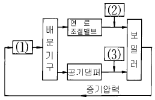
- ① 동작신호, ② 목표치, ③ 제어량
- ① 조작량, ② 설정신호, ③ 공기량
- ① 압력조절기, ② 연료공급량, ③ 공기량
- ① 압력조절기, ② 공기량, ③ 연료공급량
(정답률: 83%)
56. 다음 연소가스중 미연가스계로 측정 가능한 것은?
- CO
- CO2
- NH3
- CH4
(정답률: 67%)
57. 백금저항 온도계로 0℃에서의 저항소자의 표준 저항값으로 주로 사용되는 것이 아닌 것은?
- 25[Ω]
- 50[Ω]
- 100[Ω]
- 150[Ω]
(정답률: 60%)
58. U자관 압력계에 관한 설명으로 틀린 것은?
- 유리관을 U자형으로 구부려서 관속에 수은, 물, 기름등을 넣어 측정 압력을 도입한다.
- 차압을 측정할 경우에는 한쪽 끝에만 압력을 가한다.
- 압력 또는 압력차는 양 액면의 높이의 차를 읽음으로써 측정할 수 있다.
- U자관의 크기는 취급의 간편함과 읽기 쉬운점 등을 고려하여 특수한 용도를 제외하고는 보통 2m 정도의 것으로 한정되어 있다.
(정답률: 95%)
59. 부자식(float)면적 유량계에 대한 설명중 틀린 것은?
- 기구가 간단하나 고장이 많다.
- 측정 범위를 크게 할 수 있다.
- 액면의 변화량에 따라 경보장치를 부착할 수 있다.
- 액면이 많이 흔들리는 곳은 사용하기 곤란하다.
(정답률: 19%)
60. 가스분석계인 자동 화학식 CO2계에 대한 원리를 설명한 것으로 틀린 것은?
- 조작은 모두 자동화되어 있다.
- 피스톤의 운동으로 일정한 용적의 시료가스가 KOH용액 중에 분출되어 CO2는 여기서 용액에 흡수되지 않는다.
- 흡수액 선정에 따라 O2 및 CO의 분석계로도 사용할수 있다.
- 올자트(orsat)식 가스분석계와 같이 CO2를 흡수액에 흡수시켜서 이것에 의한 시료가스 용액의 감소를 측정하고 CO2농도를 지시한다.
(정답률: 25%)
4과목: 열설비재료 및 관계법규
61. 요로(窯爐)의 정의를 설명한 것으로 가장 적절한 것은?
- 물을 가열하여 수증기를 만드는 장치이다.
- 물체를 가열하는 공업적 장치이다.
- 금속을 녹이는 장치이다.
- 도자기를 굽는 장치이다.
(정답률: 73%)
62. 다음 중 열사용기자재를 바르게 설명한 것은?
- 연료 및 열을 사용하는 기기, 축열식 전기기기와 단열성 자재를 말한다.
- 일명 특정 열사용기자재라고도 한다.
- 연료 및 열을 사용하는 기기만을 말한다.
- 연료 및 열, 전기를 사용하는 기기를 말한다.
(정답률: 77%)
63. 보온을 두껍게 하면 방산열량(Q)은 적게 되지만 보온의 비용(P)이 증대하여 진다. 일반적으로 경제적인 보온두께는 다음 중 어느 것이 최소치일 때를 말하는가?
- Q + P
- Q + P2
- Q2 + P
- Q2 + P2
(정답률: 58%)
64. 내화단열 벽돌의 사용 온도는 몇 도 이상인가?
- 600℃
- 800℃
- 1000℃
- 1300℃
(정답률: 43%)
65. 단조(段造)용 가열로에서 재료에 산화스케일이 가장 많이 생기는 가열방식은?
- 반간접식
- 직화식
- 무산화 가열방식
- 급속 가열방식
(정답률: 60%)
66. 다음 중 보온재의 열전도율을 설명한 것으로 맞는 것은?
- 온도가 높아질수록 작아진다.
- 온도에 관계없이 일정하다.
- 온도가 낮아질수록 커진다.
- 온도가 높아질수록 커진다.
(정답률: 53%)
67. 에너지이용합리화법상 검사대상기기가 아닌 것은?
- 가스 사용량이 17kg/h를 초과하는 소형온수보일러
- 정격용량이 0.58MW를 초과하는 철금속가열로
- 최고사용압력(MPa)과 내용적(m3)을 곱한 수치가 0.004를 초과하는 것으로 용기안이 대기압을 넘는 반응기
- 최고사용압력이 0.2MPa를 초과하는 증기를 보유하는 용기로서 내용적이 0.004m3 이상인 용기
(정답률: 53%)
68. 유리섬유의 내열도에 있어서 다음중 안전사용 온도범위를 크게 개선시킬 수 있는 결합제는?
- 페놀 수지
- 메틸 수지
- 실리카겔
- 멜라민 수지
(정답률: 77%)
69. 에너지이용합리화법상 2E 보일러를 개조하였을 때 개조검사를 받아야할 자는?
- 보일러 제조업자
- 보일러 시공업자
- 보일러 설치자
- 보일러 조종자
(정답률: 39%)
70. 고 알루미나질 내화물의 특성에 합당하지 않은 것은?
- 중성내화물이다.
- 내식성, 내마모성이 적다.
- 내화도가 높다.
- 고온에서 부피변화가 적다.
(정답률: 70%)
71. 중유 소성을 하는 평로에서 축열실의 역할은?
- 연소용 공기를 예열한다.
- 연소용 중유를 예열한다.
- 원료를 예열한다.
- 제품을 가열한다.
(정답률: 65%)
72. 터널가마에서 샌드 시일(sand seal)장치가 마련되어 있는 이유는?
- 내화벽돌 조각이 아래로 떨어지는 것을 막기 위해서
- 열 절연의 역할을 하기 위해서
- 찬바람이 가마내로 들어가지 않도록 하기 위해서
- 요차를 잘 움직이게 하기 위해서
(정답률: 58%)
73. 보일러에 부착하는 안전밸브에 대한 설명으로 잘못된 것은?
- 스프링식 안전밸브는 고압, 대용량 보일러에 적합하다.
- 지렛대식 안전밸브는 추의 이동에 따라 증기의 취출 압력을 조정한다.
- 스프링식 안전밸브는 스프링의 신축으로 증기의 취출 압력을 조절한다.
- 중추식 안전밸브는 밸브 위에 추를 올려 놓아 증기압력과 수직이 되게 하여 고압용으로 적합하다.
(정답률: 63%)
74. 산업자원부장관은 에너지 수급의 불균형으로 인하여 국민경제. 국민생활 또는 공공이익을 현저히 저해하거나 저해할 우려가 있다고 인정되는 경우 에너지사용 등의 제한조치를 할 수 있는데 다음 중 그 내용이 아닌 것은?
- 에너지의 개발
- 지역별 에너지 할당
- 에너지의 비축
- 에너지 사용의 제한 또는 금지
(정답률: 88%)
75. 검사대상기기 조종자의 신고사유가 발생한 경우 발생한 날로 부터 며칠이내에 신고하여야 하는가?
- 10일
- 20일
- 30일
- 60일
(정답률: 65%)
76. 특정열사용 기자재 설치.시공범위가 아닌 것은?
- 강철제보일러 세관
- 철금속가열로의 시공
- 태양열 집열기 배관
- 금속균열로의 배관
(정답률: 64%)
77. 로재의 하중연화점을 측정하는 방법으로 옳은 것은?
- 소정 온도에서 압축강도를 측정하는 방법
- 하중을 일정하게 하고 온도를 높이면서 그 하중에 견디지 못하고 변형하는 온도를 측정하는 방법
- 하중과 온도를 동시에 변화시키면서 변형을 측정하는 방법
- 하중과 온도를 일정히 하고 일정시간후의 변형을 측정하는 방법
(정답률: 72%)
78. 에너지관리 신고대상자는 연료 및 열과 전력의 연간 사용량의 합계가 얼마 이상인 자로 하는가?
- 250티.오.이
- 1000티.오.이
- 1500티.오.이
- 2000티.오.이
(정답률: 86%)
79. 다음 중 탄화규소(SiC)질 내화물에 대한 설명으로 옳지 않는 것은?
- 내화도, 열간 강도가 높다.
- 구조적 스폴링을 일으키기 쉽다.
- 열전도율이 크다.
- 열팽창율이 적다.
(정답률: 34%)
80. 가마(요)내를 부압으로 하였을 때 피열물이 받는 영향은?
- 산화되기 쉽다.
- 환원되기 쉽다.
- 중성이 유지된다.
- 변동이 없다.
(정답률: 53%)
5과목: 열설비설계
81. 다음 중 프라이밍과 포오밍의 원인이 아닌 것은?
- 증기부하가 과대할 때
- 보일러수에 불순물 유지분이 많이 포함되어 있을 때
- 수면과 증기 취출구가 작을 때
- 주증기변을 급히 열었을 때
(정답률: 47%)
82. 다음 중 보일러 파열을 방지하기 위해 설치되는 안전밸브의 분출압력 조정 형식이 아닌 것은?
- 레버식
- 중추식
- 전자식
- 스프링식
(정답률: 65%)
83. 그림과 같은 폭 50㎜,두께 12.7㎜의 강판을 38㎜만 겹쳐전주(全周) 필릿 용접을 한다. 여기에 9000㎏의 하중을 작용시키면 필릿용접 치수는 얼마인가? (단, 용접허용응력은 1020㎏/cm2이다.)
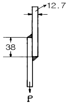
- 3㎜
- 5㎜
- 7㎜
- 9㎜
(정답률: 34%)
84. 노통식 보일러에서 파형부의 길이가 230㎜ 미만되는 파형노통의 최소 두께(t)를 결정하는 식은? (단, P : 최고 사용압력, D : 노통의 평균지름, C : 돌기의 높이)
- PD
- P/D
- C/PD
- PD/C
(정답률: 90%)
85. 공기예열기의 효과에 대한 설명 중 틀린 것은?
- 폐기의 열손실을 감소시켜서 원동소 전체의 효율을 높인다.
- 연소효율을 증가시킨다.
- 저질탄을 연소시킬 수 있다.
- 노속의 온도를 높게 할 수 있고, 연소속도를 크게 할수 있어 노의 형상을 복잡하게 한다.
(정답률: 94%)
86. 다음 중 가셋스테이(Gusset Stay)를 사용하는 보일러는?
- 수관 보일러
- 주철제 보일러
- 노통연관 보일러
- 직립형 보일러
(정답률: 73%)
87. 증기트랩은 기계적 트랩, 오리피스 트랩(orifice trap) 및 정온트랩(thermostatic trap)과 같은 3가지 대표적인 유형으로 분류할 수 있는데, 이 중 기계적 트랩의 기본 조작원리는?
- 압력차원리
- 열팽창원리
- 부력원리
- 마찰원리
(정답률: 42%)
88. 보일러상부 드럼에서 기수공발(carry over)현상이 일어날 경우, 이 현상을 방지하기 위한 신속한 조치가 아닌 것은?
- 드럼 저수위 유지
- 청관제 투입
- 블로우 다운 조절
- 밸브의 급격 개방 방지
(정답률: 73%)
89. 증기 및 온수보일러를 포함하여 강궤 보일러의 경우 최고 사용압력이 4.3[㎏/cm2] 이하의 보일러에서의 수압시험압력은 어느 것이 좋은가?
- 시험압력이 최고사용압력의 1.5배의 압력으로 한다.
- 시험압력이 최고사용압력의 2배의 압력으로 한다.
- 최고사용압력의 1.3배에 5[㎏/cm2]를 더한 압력으로 한다.
- 최고사용압력에 1[㎏/cm2]를 더한 압력으로 한다.
(정답률: 42%)
90. 파이프의 재질이나 안지름, 두께는 다음 조건을 고려하여 정한다. 다음 중 관계없는 인자는?
- 수송거리
- 유체의 순도
- 유체의 종류
- 유속, 유량
(정답률: 79%)
91. 열교환기에서 전열면적 A(m2)와 전열량 Q(㎉/h)사이에는 어떠한 관계가 있는가? (단, Δθm는 대수평균온도차이고, K는 열관류율이다.)
- Q = A.Δθm
- A = K.Δθm
- K =A.Δθm/Q
- Δθm=Q/A.K
(정답률: 70%)
92. 비중량이 0.3㎏/m3인 연소가스가 연돌높이 20m를 지나 외기온도 20℃인 대기로 방출될 때, 이론 통풍력(㎏/m2)은?
- 9.7㎏/m2
- 12.5㎏/m2
- 16.3㎏/m2
- 18.1㎏/m2
(정답률: 23%)
93. 지름이 d, 두께가 t인 얇은 살두께의 밀폐된 원통안에 압력 P가 작용할 때 원통에 발생하는 원주방향의 인장응력 [σt] 관계식은?
- πdP/t
- πdP/2t
- dP/t
- dP/2t
(정답률: 47%)
94. 송풍기의 출구 풍압을 [h]㎜Aq, 송풍량을 [V]m3/min, 송풍기 효율을 [η]으로 표기하면 송풍기 마력 [N]은 어떻게 표시되는가?
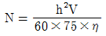
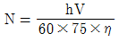
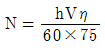
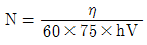
(정답률: 89%)
95. 급수에 대하여 ppm을 사용할 때 이에 대한 옳은 설명은?
- 물 1㏄중에 함유한 시료의 양을 ㎎으로 표시한 것
- 물 100㏄중에 함유한 시료의 양을 ㎎으로 표시한 것
- 물 1ℓ 중에 함유한 시료의 양을 g으로 표시한 것
- 물 1ℓ 중에 함유한 시료의 양을 ㎎으로 표시한 것
(정답률: 82%)
96. 보온재의 보온성능은 그 재료의 열전도율로서 언급될 수 있는데 다음 중 열전도율의 단위는?
- ㎉/m2h℃
- ㎉/mh℃
- ㎉/m4h℃
- ㎉/m3h℃
(정답률: 47%)
97. 프라이밍 현상을 설명한 것으로 틀린 것은?
- 수면계의 수위가 요동해서 수위를 확인하기 어렵다.
- 안전밸브, 압력계의 기능을 방해한다.
- 워터해머(water hammer)를 일으킨다.
- 절탄기의 내부에 스케일이 생겨 소손한다.
(정답률: 50%)
98. 내경 1000㎜, 두께 10㎜의 강판으로 원통을 만들려면 몇 ㎏/cm2의 압력까지 사용할 수 있는가? (단, 허용응력 7㎏/mm2, 이음효율은 65%로 한다.)
- 7.6
- 8.3
- 9.1
- 10.5
(정답률: 29%)
99. 보일러의 효율을 입.출열법에 의하여 계산하려고 할 때 다음 중 입열항에 속하지 않는 것은?
- 연료의 현열
- 연소가스의 현열
- 공기의 현열
- 연료의 저위발열량
(정답률: 50%)
100. 이중관 열교환기(double-pipe heat exchanger)중 병류식, 단류 교환기를 역류식과 비교할 때 옳지 않은 것은?
- 전열량이 적다.
- 일반적으로 거의 사용되지 않는다.
- 한 유체의 출구 온도가 다른 유체의 입구온도까지 접근이 불가능하다.
- 전열면적이 많이 필요하다.
(정답률: 50%)
①수분은 연소시 발열량을 감소시키는 요인으로 작용합니다. 수분이 많은 석탄은 연소시 더 많은 열을 소비하게 되므로 발열량이 감소합니다.
②휘발분은 연소시 매연을 발생시키는 요인으로 작용합니다. 휘발분이 많은 석탄은 연소시 더 많은 매연을 발생시키므로 대기오염을 유발할 수 있습니다.
③황분은 연소시 연소기관의 부식을 유발하는 요인으로 작용합니다. 황분이 많은 석탄은 연소시 더 많은 황산가스를 발생시키므로 연소기관의 부식을 유발할 수 있습니다.